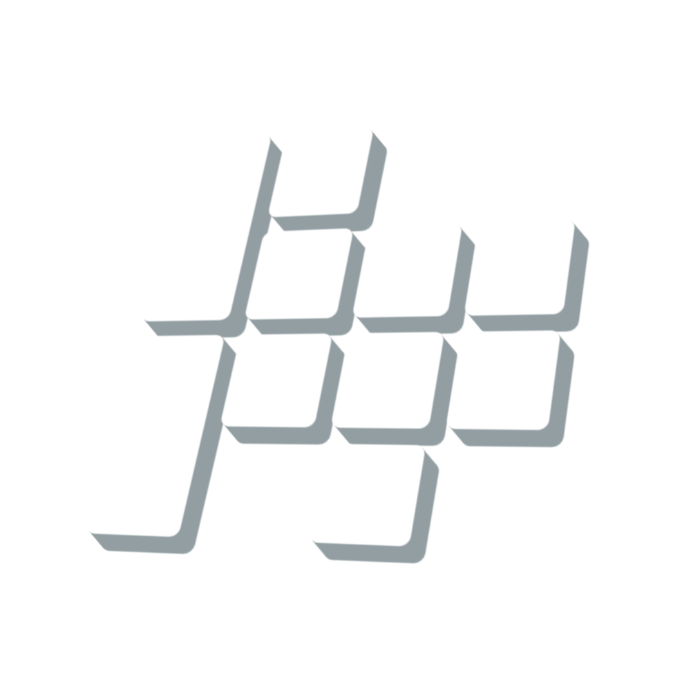

PocketTrackerMusic tracker for retro gaming handhelds and smartphones. Free and open source.
v0.9.6 · public beta
Download
How to install
Whichever you pick, on first run open the file browser and press A on the ADD FOLDER... row. The folder you pick is where your projects, samples and renders live.
Pick one route and stay with it. F-Droid signs its own build, so its copy and the one from GitHub Releases will not install over each other — switching means uninstalling first, and that takes your settings with it. Projects and samples survive.
PocketTracker asks for no permissions at all — that folder is the only place it can touch.
How to install
PocketTracker.exe. Windows SmartScreen warns about an unsigned app the first time: More info → Run anyway.Documents\PocketTracker\.A console window opens behind the tracker and stays there on purpose — it prints what the audio device and the display actually did, which is the most useful thing to attach to a bug report. Closing it closes the app.
How to install
PocketTracker file inside it.libsdl2-2.0-0 on Debian/Ubuntu, SDL2 on Fedora, sdl2 on Arch.~/.local/share/PocketTracker, as Projects/, Samples/ and Soundfonts/. Set POCKETTRACKER_HOME to put them somewhere else.A gamepad works over SDL, and the keyboard is mapped too.
How to install
autoinstall folder inside your device's PortMaster folder. Recent PortMaster versions also watch ports/autoinstall/.ports/pockettracker/data/, created on first launch — copy samples in there over USB or the network.Let PortMaster unpack it rather than unzipping it yourself — unzipping on a PC and copying the files across can strip the permissions the port needs, and it then does nothing when you launch it.
For ArkOS, muOS, JELOS, Knulli, ROCKNIX and friends. The port uses your device's own SDL2, so it follows whatever your firmware already does about the screen and the audio.
PocketTracker follows the lineage of LSDJ — the same family as LGPT and the Dirtywave M8. If you've used one, you'll feel at home right away: you build a track from the ground up with the classic song → chain → phrase → instrument structure, chaining small looping patterns into a full arrangement, with a deep set of step effects and per-instrument envelopes and LFOs to bring it to life.
Load a sample in almost any format — WAV, MP3, FLAC, OGG, Opus or M4A. Short on source material? Just screen-record something from YouTube or your favourite video game and use this MP4 file as a sample. Then get your hands on the waveform: trim it, slice it, repitch it, time-stretch it (can't wait to hear your jungle tunes) and bake in effects, right on the handheld. Add slice markers, or chop it up destructively.
Arrange your patterns into a full song across eight stereo tracks, then balance it on the mixer — per-track sends, reverb and delay buses, and a master chain with an OTT-style multiband compressor or the lo-fi DUST character. Export the finished mix as a WAV, each track as a separate stem, or resample any part of the song back into a fresh instrument to build on.
PocketTracker was designed with retro gaming handhelds in mind — but you don't need one to start. There's a full touchscreen layout for Android phones too, wrapped in an Amiga-inspired skin that comes in two color schemes. Windows and Linux desktop versions are also available now.
Make it yours. Switch between built-in interface color themes or design your own in the theme editor, and pick from a row of top-bar visualizers — from a ProTracker-style scope to a Pioneer-style stereo tower.
Community & support
I'd genuinely appreciate your feedback, feature requests and bug reports — they're what help me improve and refine the app. You can reach me on GitHub or over on the Discord. And if you're enjoying PocketTracker, you can help support its continued development.